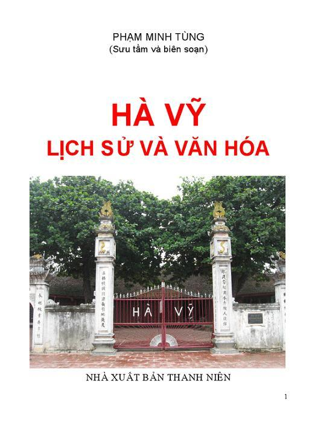

Dân tộc ta là một dân tộc anh hùng. Mỗi một vùng quê trên dải đất hình chữ S này đều mang trong mình những giá trị lịch sử và văn hóa trường tồn, sinh thành và nuôi dưỡng những người con bất khuất và kiên cường trong quá trình xây dựng và bảo vệ Tổ quốc. Hà vỹ - một miền quê có bề dày truyền thống, đang khát khao vươn lên từng ngày – cũng nằm trong bối cảnh và ý nghĩa đó. Tuy nhiên, ngay từ buổi lập đất, lập làng, quê hương và con người Hà Vỹ có điểm không giống so với các địa phương khác trong toàn quốc. Đó là đức hy sinh của người dân Hà Vỹ với đất nước Việt Nam với vua Thục Phán liên quan đến sự tích xây đắp thành Cổ Loa vào cuối thế kỷ thứ III TCN. Trải qua hơn 2 200 năm lịch sử người dân Hà Hào (tên làng khi mới lập nghiệp) – Hà Vỹ luôn cần cù chịu khó, đoàn kết chống thiên tai giặc giã đến nay vẫn tồn tại và ngày càng phát triển. Từ một nơi đất trũng sình lầy biến thành một làng quê trù phú như ngày hôm nay, đó cũng là một kỳ tích của các thế hệ nhân dân làng Hà Vỹ.
Kỹ sư Phạm Minh Tùng là một cán bộ khoa học kỹ thuật, không phải là nhà nghiên cứu lịch sử, không phải là nhà văn, song với tài năng và tâm huyết với quê hương Hà Vỹ, tác giả đã kỳ công nghiên cứu sưu tầm nhiều tài liệu, tự học tự khám phá, tích lũy được nhiều tư liệu quí để tổng hợp khái quát quá trình lịch sử và văn hóa của quê hương và con người Hà Vỹ hơn 2 200 năm qua
Trước thềm Xuân mới Kỷ Sửu 2009, hướng tới Đại lễ kỷ niệm 1000 năm Thăng Long - Hà Nội, phát huy truyền thống tốt đẹp “Uống nước nhớ nguồn”, việc xuất bản cuốn sách “Hà Vỹ - Lịch sử và văn hóa” mang một giá trị to lớn trong việc giáo dục, khơi dậy lòng tự hào với muôn đời con cháu hôm nay và mai sau
Nhà xuất bản Thanh niên trân trọng giới thiệu tới đông đảo bạn đọc cả nước cuốn sách quí chứa đựng đầy ý nghĩa truyền thống lịch sử và văn hóa này!
NHÀ XUẤT BẢN THANH NIÊN